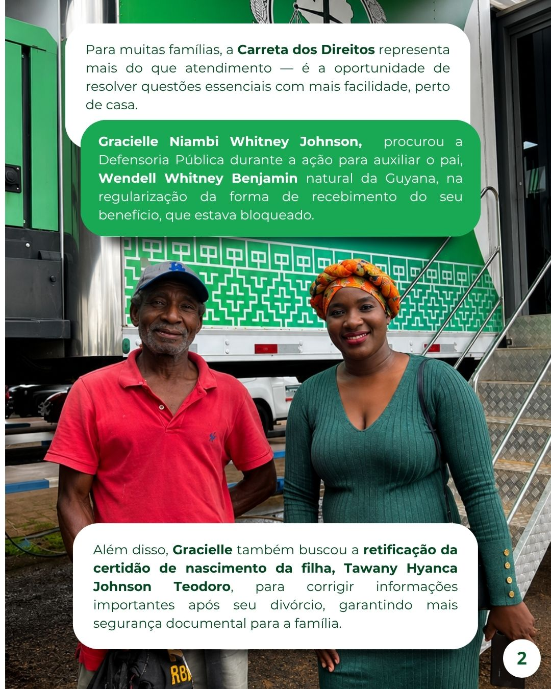
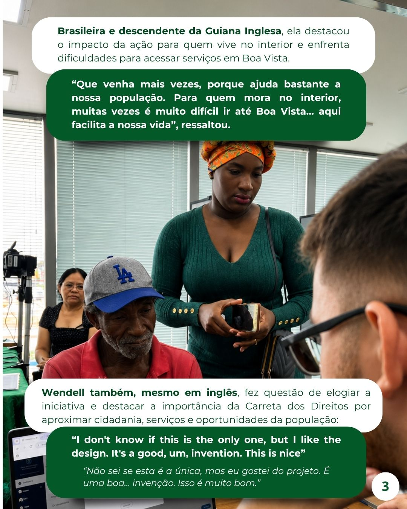
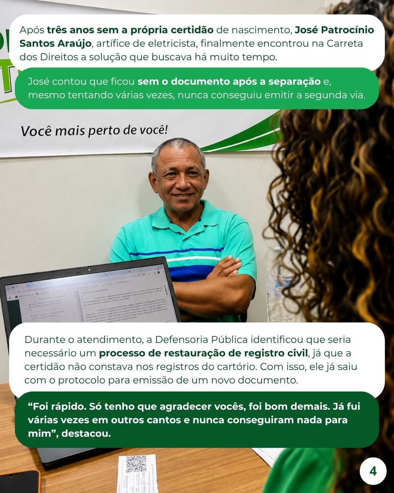
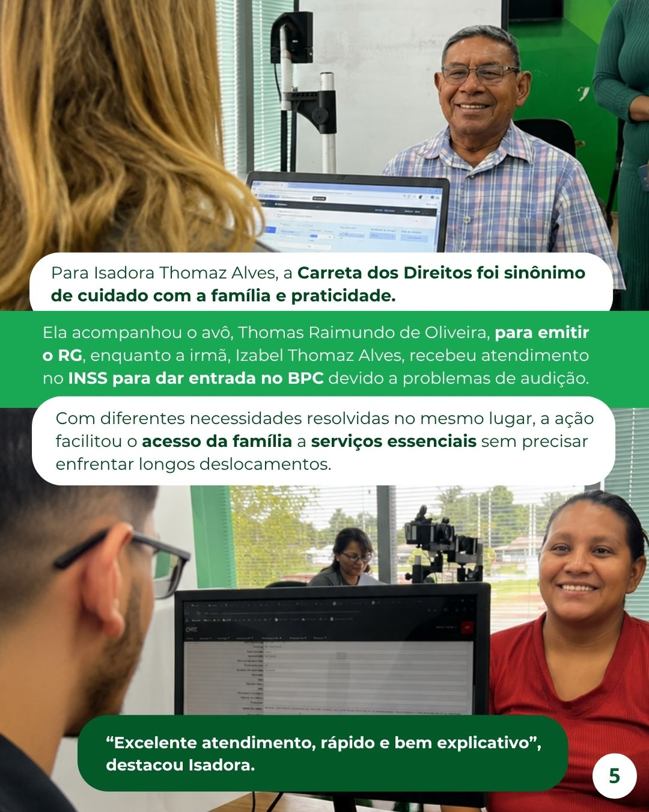

Rosto do atendimento
Cada atendimento concluído representa uma vitória concreta para o assistido e para a missão pública da Defensoria em Roraima.
Desde 2024, a Carreta dos Direitos percorre Roraima levando a Defensoria para perto de quem mais precisa, transformando deslocamento em acesso à justiça.
Desde 2024, a Carreta dos Direitos percorre Roraima levando a Defensoria para perto de quem mais precisa. Já passou por cidades, bairros e comunidades onde o atendimento jurídico raramente faz parte da rotina.
Todo mês, ela para em uma nova localidade e vira referência para quem tem situações represadas por falta de acesso ou informação. A lógica é simples: se a barreira está na distância, a instituição se movimenta.
Só em 2025, foram mais de 231 mil atendimentos em todo o estado. Dentro da carreta, pessoas conseguem tirar documentos, buscar orientação e dar andamento em questões que pareciam sem saída.
Quando a Carreta chega, ela muda o dia de quem estava esperando uma solução.

Quando estaciona, a Carreta reorganiza o fluxo do território ao redor dela: acolhe, orienta e transforma um equipamento visível em porta de entrada para direitos que estavam distantes.
Cada atendimento concluído representa uma vitória concreta para o assistido e para a missão pública da Defensoria em Roraima.

Mais do que resolver demandas urgentes, a ação fortalece confiança, continuidade e acesso qualificado a direitos.

Emissão de documentos e orientações práticas agilizam a vida de quem precisa.

Profissionais qualificados atuando em conjunto para atendimento integrado.

A presença da Carreta gera resultados imediatos para famílias e comunidades.
O atendimento chega a locais onde a rotina institucional ainda não está presente de forma contínua.
A população consegue reunir documentos, pedir orientação e destravar questões jurídicas diretamente no local.
Quando estaciona, a Carreta se torna ponto de apoio para demandas que ficaram aguardando oportunidade de atendimento.
A estrutura é posicionada em uma localidade estratégica para ampliar o acesso naquele território.
Documentação, escuta inicial, orientação e encaminhamento passam a acontecer ali mesmo, de forma concentrada.
Cada atendimento abre caminho para continuidade do caso e reduz o peso de demandas antes paradas pela distância.